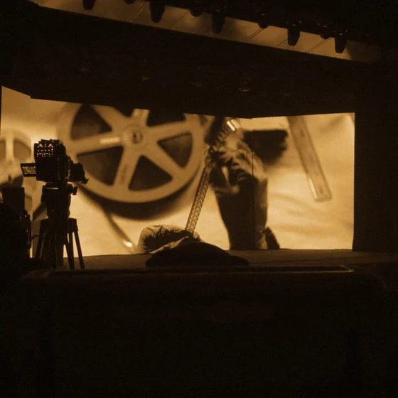

نكتشف الأصوات التي تستحق أن تصل إلى الشاشة
نرافق الكتّاب وصنّاع الأفلام في تطوير أعمالهم، وصقل رؤيتهم، وتهيئة نصوصهم لتكون جاهزة للصناعة، وفتح الطريق أمامهم نحو الفرص الحقيقية داخل الصناعة.

شريك معتمد
نصك محمي هنا، ونشجعك على تسجيله لدى SAIP.
البداية
هناك كتّاب موهوبون،
وقصص تستحق أن تُروى
توجد أفكار ونصوص واعدة، لكن بعض الكتّاب لا يجدون من يقرأ أعمالهم بجدية، أو يساعدهم على تطويرها، أو يوضح لهم الخطوة التالية.
من هنا بدأت سين ون
اقرأ الحكاية كاملة
ما نفعله
نكتشف. نطوّر. نربط.
نكتشف
نبحث عن الأصوات والقصص قبل أن تلتفت إليها الصناعة.
نطوّر
نقرأ المشروع كفيلم لا كنص، ونعمل مع الكاتب على أقوى نسخة منه.
نربط
نأخذ المشاريع القوية إلى الجهات التي تستطيع أن تصنعها.
قبل أن تُرسل نصك
ما الذي نبحث عنه
- أصوات جديدة لها بصمة خاصة
- قصص تستحق أن تُرى على الشاشة الآن
- أنواع وزوايا وطرق سرد غير مألوفة
- مشاريع بفكرة قوية ما زالت تحتاج تطويرًا
- صنّاع أفلام لديهم ما يريدون قوله، ويريدون بناء هوية سينمائية حوله
القراءة
كل شيء يبدأ من النص
نقرأ النص لنفهم ما يميّزه وما يحتاج إلى تطوير، ثم نحدد معه الخطوة التالية، سواء كانت إعادة كتابة، أو تطويرًا أعمق للمشروع، أو الوصول إلى فرصة مناسبة في الصناعة.
وتبدأ القراءة بتقرير مفصّل يكتبه قارئ متخصص عبر ثمانية محاور:
- الفكرة والموضوع
- عنصر الجذب
- الرهانات والحبكة
- الشخصيات
- الحوار
- البناء والإيقاع
- قابلية الإنتاج
- العرض والتنسيق
الخدمات
من أين تبدأ
تغطية النصوص القصيرة
100 - 400
تقرير تغطية احترافي لفيلمك القصير يحدد موقع نصك بدقة، بملاحظات عملية قابلة للتطبيق مع إمكانية ترشيح النصوص المتميزة إلى جهات في الصناعة.
10 إلى 15 يوم عمل
حجز التقييمتغطية النصوص الطويلة
800 - 1,200
تقرير تغطية احترافي لفيلمك الطويل يحدد موقع نصك بدقة، بملاحظات عملية قابلة للتطبيق مع إمكانية ترشيح النصوص المتميزة إلى جهات في الصناعة.
حتى 4 أسابيع
حجز التقييمتغطية المعالجة
150
تقييم مبكر للمعالجة يحدد مدى جاهزيتها للتحول إلى سيناريو مكتمل.
7 إلى 12 يومًا
حجز التقييميمكنك إعادة تقديم نسخة مطوّرة من العمل نفسه (Draft 2) مجانًا بعد استلام التقييم الأول.
الرحلة
من النص إلى المشروع
ست خطوات يمرّ بها كل مشروع عندنا، من لحظة وصوله حتى طاولة المنتج.
تقديم النص
يرفع الكاتب نصه ومعلومات مشروعه الأساسية.
القراءة والتقييم
يقرأ النصّ قارئ متخصص ويعدّ تقييمًا احترافيًا لعناصره.
استلام النتائج
يتسلّم الكاتب تقريره ويبدأ تطوير نصه بناءً عليه.
الترشيح للاستضافة
تُرشَّح النصوص الأعلى تقييمًا بموافقة الكاتب الكتابية.
الاستضافة والمشاركة
يُضاف المشروع إلى مكتبة خاصة ويُشارك مع جهات الصناعة.
التطوير والإنتاج
فرص فعلية لتطوير المشروع أو نقله إلى مراحل إنتاجية.
للكتّاب
أنت لا تحتاج فقط
إلى من يقرأ نصك
تحتاج إلى من يفهم لماذا تريد أن تصنع هذا الفيلم.
نحن لا نخبرك بما يجب أن يكون عليه فيلمك، بل نساعدك على الوصول إلى أقوى نسخة مما تحاول قوله أنت.
قدّم نصكللصناعة
لا نرسل إليك نصًّا،
بل مشروعًا
حين يصلك مشروع منّا، يكون قد قُرئ وفُهم، وعُرف ما يحتاجه وما يميّزه.
نختصر عليك وقت التقييم الأول: قصة أوضح، واتجاه إبداعي أقوى، وفهم مكتوب لما هو هذا الفيلم ولمن.
تواصل معناالفريق
من يقرأ نصك
قرّاء من صنّاع الأفلام وكتّاب السيناريو، ومنتج تطوير إبداعي يتولّى المشاريع بعد التوصية.
حسن زروق
قائد التطوير الإبداعي
لديك أسئلة؟
الأسئلة الشائعة
تغطية النصوص السينمائية (Script Coverage) هي تحليل مفصّل يقدّمه قارئ/ناقد مختص لعمل الكاتب. نشأت هذه الخدمة في الاستوديوهات حيث كان يُوظَّف قرّاء لقراءة عدد كبير من السيناريوهات نيابةً عن المنتجين. لكن خدمتنا في التغطية النقدية تختلف عن ذلك؛ فهدفنا الأساسي هو مساعدة الكتّاب على تطوير نصوصهم والوصول بها إلى مرحلة تجعلها جاهزة للإرسال إلى شركاء الصناعة، مع تقييم صريح لما ينجح وما لا ينجح وأسباب واضحة لكل رأي.
نقدّم حاليًا نوعين من الملاحظات النقدية: تغطية النصوص السينمائية، حيث يدوّن الناقد ملاحظات بنّاءة تشمل الفكرة والموضوع (Premise & Theme)، عنصر الجذب (Hook)، المخاطر وتطور الحبكة (Stakes & Plot)، الشخصيات، الحوار (Dialogue)، البنية والإيقاع (Structure & Pace)، قابلية الإنتاج (Producibility)، والعرض العام، مع خاتمة تلخّص أبرز نقاط القوة والجوانب التي تحتاج إلى تحسين. وتغطية المعالجات (Treatments)، حيث يدوّن الناقد ملاحظات تمتد إلى صفحتين تشمل المحتوى، والـ logline، وبنية القصة، وأدوار الشخصيات، واقتراحات لتحسين عرضك التقديمي (Pitch).
من الصعب النظر إلى عملك بموضوعية تامة عندما تكون أنت المؤلف، لذلك توفّر خدمة التغطية نظرة موضوعية من شخص يفهم متطلبات الصناعة. وعند إرسال نصّك إلى استوديو أو وكيل أو منتج، فلن تتمكّن من الاطلاع على ملاحظات القارئ، مما يعني أنك لن تحصل على فرصة لمعالجة نقاط الضعف — أما من خلال هذه الخدمة فستحصل على هذه الفرصة.
تأسست Scene One بهدف مساعدة كتّاب السيناريو الصاعدين على دخول صناعة الأفلام.
تختلف التغطية القصيرة عن الطويلة: النص القصير (من 10 إلى 40 صفحة) يُحتسب بالصفحة، والنص الطويل (من 80 إلى 120 صفحة) ضمن نطاق سعري حسب حجمه. الأسعار المعروضة في قسم الباقات هي أسعار الإطلاق، ويمكنك إعادة تقديم نسخة مطوّرة من العمل نفسه (Draft 2) مجانًا بعد استلام التقييم الأولي.
مدة التسليم عادةً من 10 إلى 15 يومًا، وتبدأ من لحظة إسناد نصك إلى أحد القرّاء، وتصلك رسالة عبر البريد عند الإسناد. بعد التسليم تستكمل رحلة النص خطواتها: النصوص الأعلى تقييمًا تُرشَّح للاستضافة بموافقة الكاتب الكتابية، ثم تُشارك مع جهات الصناعة والشركاء.
الجيل القادم من صنّاع الأفلام
لا ينبغي أن ينتظر حتى يكتشفه أحد
هل كتبت قصة تستحق أن تُرى؟ ابدأ من المشهد الأول.
قدّم نصك